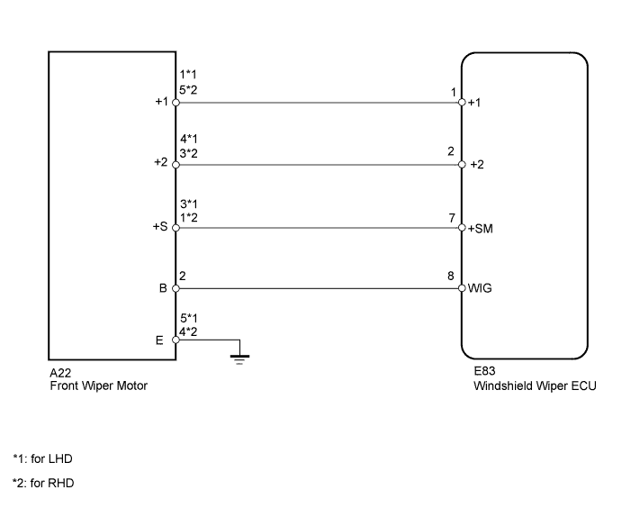
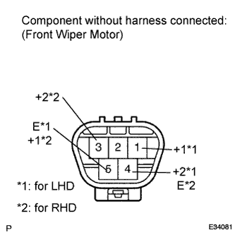
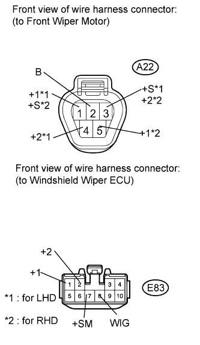

WIPER AND WASHER SYSTEM (w/ Rain Sensor) > Front Wiper Motor Circuit |

| 1.PERFORM ACTIVE TEST USING INTELLIGENT TESTER (FRONT WIPER MOTOR) |
Select the Active Test, use the intelligent tester to generate a control command, and then check the front wiper motor.
| Item | Test Details | Control Range | Diagnostic Note |
| Wiper Mot (HI) | Wiper motor HI operation | ON / OFF | - |
| Wiper Mot (LO) | Wiper motor LO operation | ON / OFF | - |
|
| ||||
| OK | ||
| ||
| 2.INSPECT FRONT WIPER MOTOR |
 |
Remove the front wiper motor (Click here).
Apply battery voltage to the front wiper motor and check the speed of the front wiper motor.
| Measurement Condition | Specified Condition |
| Battery positive (+) → Terminal 1 (+1) Battery negative (-) → Terminal 5 (E) | Motor operates at low speed |
| Battery positive (+) → Terminal 4 (+2) Battery negative (-) → Terminal 5 (E) | Motor operates at high speed |
| Measurement Condition | Specified Condition |
| Battery positive (+) → Terminal 5 (+1) Battery negative (-) → Terminal 4 (E) | Motor operates at low speed |
| Battery positive (+) → Terminal 3 (+2) Battery negative (-) → Terminal 4 (E) | Motor operates at high speed |
|
| ||||
| OK | |
| 3.CHECK HARNESS AND CONNECTOR (FRONT WIPER MOTOR - WINDSHIELD WIPER ECU AND BODY GROUND) |
 |
Disconnect the A22 motor connector.
Disconnect the E83 ECU connector.
Measure the resistance according to the value(s) in the table below.
| Tester Connection | Condition | Specified Condition |
| A22-2 (B) - E83-8 (WIG) | Always | Below 1 Ω |
| A22-1 (+1) - E83-1 (+1) | ||
| A22-4 (+2) - E83-2 (+2) | ||
| A22-3 (+S) - E83-7 (+SM) | ||
| A22-5 (E) - Body ground | ||
| A22-3 (+S) - Body ground | Always | 10 kΩ or higher |
| A22-2 (B) - Body ground | ||
| A22-4 (+2) - Body ground | ||
| A22-1 (+1) - Body ground |
| Tester Connection | Condition | Specified Condition |
| A22-2 (B) - E83-8 (WIG) | Always | Below 1 Ω |
| A22-5 (+1) - E83-1 (+1) | ||
| A22-3 (+2) - E83-2 (+2) | ||
| A22-1 (+S) - E83-7 (+SM) | ||
| A22-4 (E) - Body ground | ||
| A22-1 (+S) - Body ground | Always | 10 kΩ or higher |
| A22-2 (B) - Body ground | ||
| A22-3 (+2) - Body ground | ||
| A22-5 (+1) - Body ground |
|
| ||||
| OK | ||
| ||